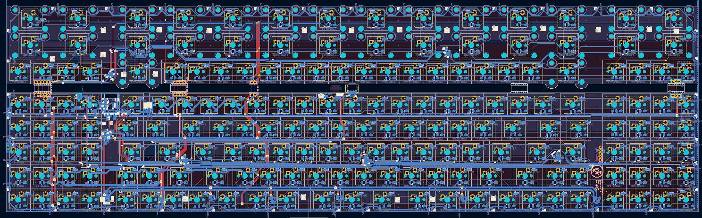
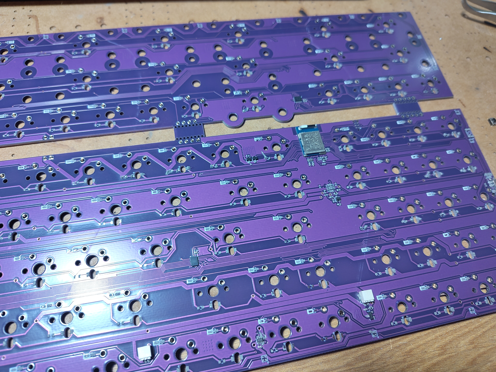
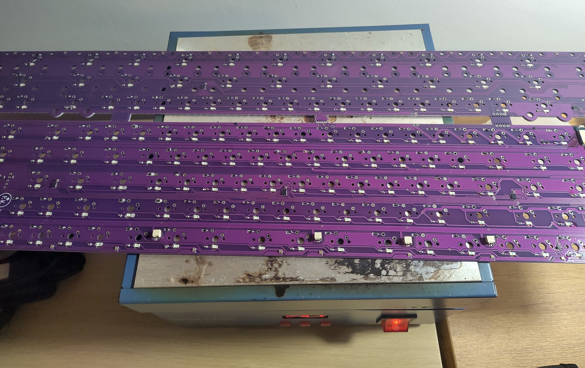
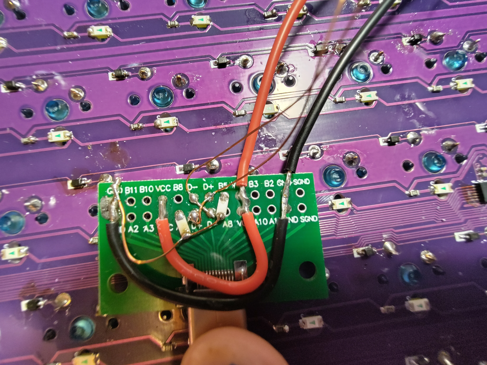
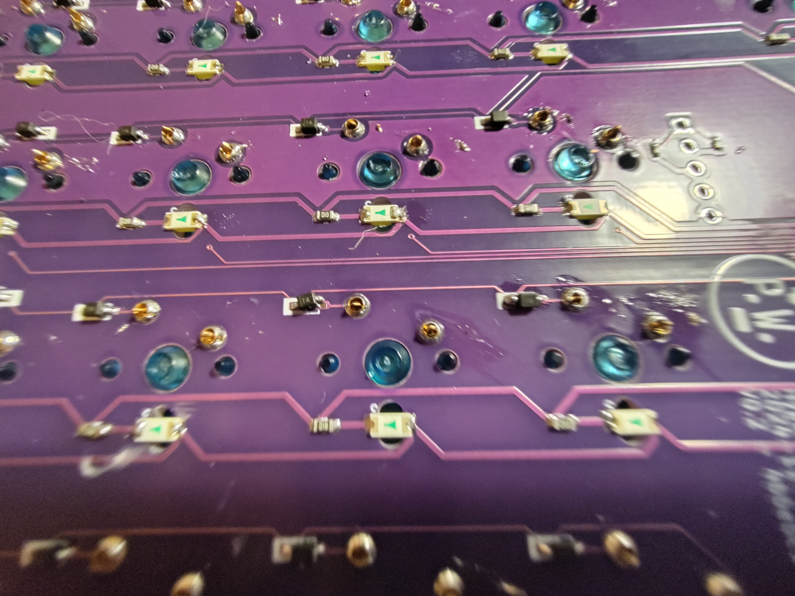
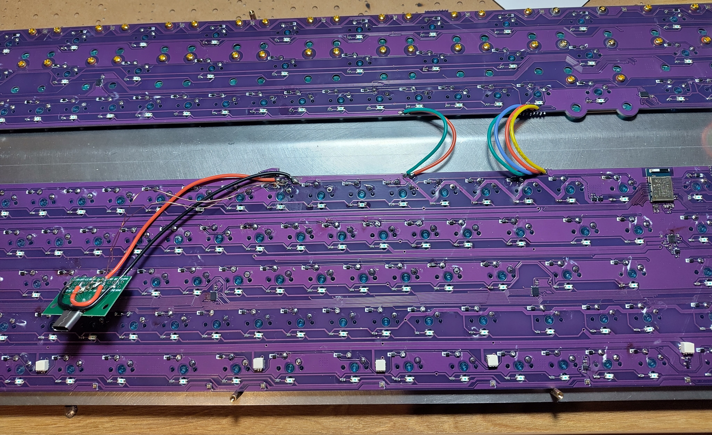
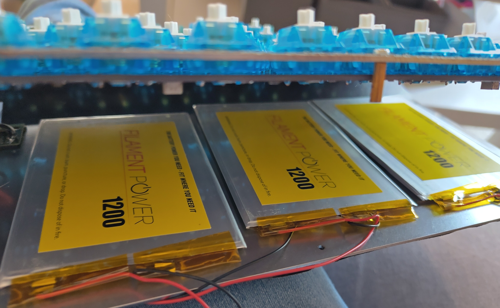
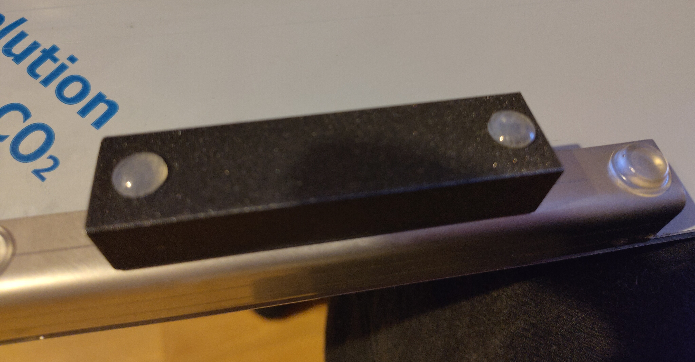

The Chronicles of Keeb 2: The Hyper 7 Evo
27th January 2025
When we were dropping off the ROTRs at Mechboards the lovely crew over there gave us a bit of a tour of their operations and showed us some cool projects of theirs, one of them was an absolutely collossal keyboard called the Hyper 7. I didn't know much about it at the time but I knew I had to put my own spin on it.
The plan was simple, keep the gargantuan form factor but add the Polarity Works touch with a sprinking of overkill. One thing I did want to do was improve the assembly experience, the Hyper 7 PCB needs you to run a very wide ribbon cable to the top daughterboard with all the columns and rows, but I had a plan to improve this. It also needed RGB underglow and white backlighting because why not, although it's a tricky job to do so without exceeding the USB current spec.
Designing
Given minimising power consumption wasn't very high up on the priority list with this board I elected to use shift registers to drive the columns, using the ZMK 595 driver you can run 32 outputs from 3 SPI pins, and you can add another 32 with just an additional CS pin. That way I could have a batch of shifters for the top board, a batch for the bottom, and it cuts the number of interconnect pins drastically, 5 pins for power and SPI, and 4 row pins. I could have gone down to 3 row pins on the top board but that would have needed another shifter for the extra columns needed, adding an extra row seemed sensible. The primary downside of the 595 as GPIO is power consumption, one 74HC595BQ (A nice small one that's easy to fit in a lot of designs) uses 80μA, which is ~3x what a well engineered nRF52840 core can consume, so if you design a board with a few of them (for example with boards using low cost integrated modules without many GPIO pins) you can end up with a pretty high power consumption. This board has got 5 shifters, with a total of 41 columns and 9 rows.
Each switch got a 1206 reverse mounted LED for some lovely lumens and both PCBs got a ring of 40 SK6805-EC15 RGB LEDs. This necessitated being a bit careful about power capacity. Each RGB LED is 20mA at full brightness, so that's 800mA total, and with 2A available with some creative interpretation of the USB spec (I'm not selling these PCBs so it's fiiine, do not do things like this on commercial products) that gave 1200 for everything else. 5-6mA per LED gave enough headroom for running the module and anything on the I2C connector. It also made sense to order the PCBs with 2oz copper and take lots of care when routing the power traces, I don't want any traces to act as impromptu fuses. Also had to double up on some of the switching circuitry to add extra capacity.
The module used was a Raytac MDBT50Q-1MV2 , it's the one that I use for a lot of projects so we had some in the drawer. It's also one of the smaller nRF52840 modules available that isn't a nightmare to breakout. Given it also has support for the high voltage mode that the nRF52 upports it's become one of my favourite modules for projects. Power management is handled by a BQ24075, battery protection by an XB3303A. I added 6 JST connectors for filament power batteries so there's lots of power available to feed those hungry hungry LEDs. Whilst I was working on the board I added a header with a few high speed IO pins for I2C, they could be handy to connect to a trackpad or some other input device.
There's some really awesome tools for working with keyboard layouts including Keyboard layout Editor, the excellent KiCad plugin for importing the layout into a pcb, the Keymap Layout Helper from Nick Coutsos for converting KLE to QMK json and ZMK Physical Layout Converter by Cem Aksolysar for importing into the ZMK physical layout format. Whilst I didn't use it here another excellent tool is ZMK Layout Helper by Joel Spaldin which assists in making position maps when you have multiple selectable layouts on a ZMK keyboard. After copying the Hyper 7 layout into KLE I had a JSON that got auto placed to sort the switches, diodes and LEDs and it was just a lot of routing. Despite being so massive the PCB is very dense with switches and holes, so there's not a huge amount of space free for traces and components. The two separate PCBs were designed as one assembly joined with mousebites, some thin traces were snuck between the holes for the keys so they could be tested as a flat assembly rather than separately. The LEDs were not connected, there was nowhere near enough copper to run all of them through

Assembly
The PCBs were ordered from JLCPCB, with an accompanying massive stencil. I'd hoped to use JLCs assembly service for this but it turns out they dont assemble boards wider than 50cm and the Hyper 7 is 55cm wide, so hand assembly it was. My flat was very cold when I did the assembly so the solder paste was quite stogy, this made everything harder. Also the sheer number of components made everything literally and metaphorically painful, by the time I was done many things were hurting and I could have frizbeed the thing out the window except I'd need to spend 6 hours making another one.

To add insult to injury I found out I'd put the USB port in the wrong spot, I hadn't measured the plate case right. Instead I used a little daughterboard to relocate it with some 3M VHB to hold it down nice and solid and hacked the connector stub off with side cutters in case it interfered with the case. Other than that there were no glaring oofs in the build process. Because it took so long to place all the components, the solder paste absorbed water and some components popped off when I reflowed it, so a lot of manual rework was needed. This probably wasn't helped by the pcb being approximately 3 times the size of the rework hotplate, so a lot of shuffling around and minor burning of fingers was required to get it all reflowed.

When correcting happy little accidents some enamelled copper wire is a godsend, but it's current handling capabilities leave a little to be desired so some chunkier silicone insulated stranded stuff was used for the power connections. This PCB bodge was a little ugly but did the job just fine.

This PCB is absolutely gargantuan, and requires a gargantuan number of stabilisers, AliExpress came to the rescue on this one, I popped a message to a seller asking for 70 2U stabs and they obliged without any questions. They were a good price too. Giving them all a bit of lube and the right films and foams was another exercise in patience but eventually they were all done. This board was kitted out with Marble Soda switches picked up in the thekey.company liquidation sale for a good price. Factory lubed too which saves doing that. Millmax sockets were used for the right side macro/numpad cluster so they can be removed and other things be placed in that gap down the line.

The power, SPI and LED control connections were made between the top and bottom boards with some more silicone stranded wire, not necessary for a lot of the signals but it looks nice and neat

The keycaps are going to be the Hyper 7 keycaps from mechboards but they're still in group buy so I haven't been able to get my hands on them yet unfortunately.
Firmware
Aside from the enormous number of keys this is running fairly plain ZMK, until that I2C header is put to use at least. I added support for ZMK Studio, which necessitated a huge physical layout definition for all the keys. My biggest issue with the firmware is simply choosing what to put on all the keys, there's so many! Also a lot of the legends on the keycaps are for slightly weird characters. The easiest way to sort this is with unicode and the ZMK Helpers ZMK module from urob. It was really easy to setup and worked really well. A lot of the legends are repeated, but I faithfully replicated them, I don't rate my chances of remembering that the 3rd set of {} keys are for some other arbitrary task.
Finishing Tweaks
The batteries had been sitting in my garage for a few years so they'd all self discharged to 1v or lower, not great for lipo batteries but a trickle charrge brought them back to life and they'll do the job. Once it was all built and sitting on my desk I thought it could do with a bit of angle, by design the R3 case sits the main section of the keyboard flat with respect to the table and that's not really my style, so I CAD'd up some simple printable feet that slot onto the bent feet of the board and are held in place with a bit of superglue and give an extra 5 degrees of angle. Once that was sorted a few 3M Bumpon feet and it was ready for action and oh boy is it truly magnificent. And yes, peeling the film off both sides was as satisfying as you could imagine



Links
- The Mechboards Hyper 7 R4 group buy (which has since ended) can be found here
- My custom PCB and feet STL can be found at their GitHub repo
- The firmware the PCB runs can be found here